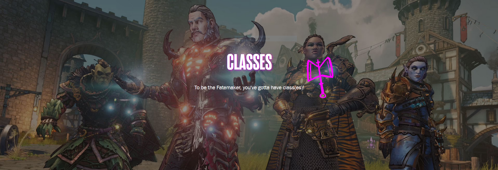

BRR-ZERKER
X
Brr-Zerkers are tenacious Frost-infused bruisers who complement
their firepower with an onslaught of brutal, up-close-and-personal melee attacks.
When confronted with a problem, a Brr-Zerker's first instinct is to turn it into a popsicle and punch their way to a solution.
Brr-Zerkers are hardy warriors who hail from the frozen mountains, with a long line of ancestors
who trained their bodies to withstand and even harness the bitter cold of icy winters.
In battle, Brr-Zerkers prefer to do their fighting up close and personal,
taking point on the front lines as a whirling maelstrom of exceptionally chilly death.
Class Information
Brr-Zerkers are specialists of Melee and Frost damage.
The Brr-Zerker's otherworldly powers allow them to become Enraged via their Action Skills,
channel the power of Frost through weaponry so that they may Freeze and shatter their enemies,
and manifest an arsenal of raw destructive force. Brr-Zerkers are even able to channel their bloodthirst
by leeching life from fallen foes using a dash of occult magic.
Class Feat
Rage of the Ancients
Using an Action Skill causes the Fatemaker to become Enraged, adding bonus Frost Damage to their attacks.
Enrage Duration will not deplete while an Action Skill is active and ends if the Fatemaker enters Save Your Soul.
Activating an Action Skill when already Enraged restores a portion of the Enrage timer.
Action Skills
Dreadwind: The Fatemaker spins, slashing anything nearby with their melee weapon and essentially becoming a pain tornado.
Grants increased Movement Speed and Slow Immunity for a duration.
STABBOMANCER
X
Stabbomancers are sneaky, Critical-hit-focused assassins who summon magic whirling blades to the battlefield and disappear into the shadows at will.
Look, Stabbomancy isn't really its own school of magic—it's a way of thinking. Specifically, "How do I stab that guy?" Up close with a dagger in the dark? A well-aimed bullet from afar? Or even an ethereal psychic ghost sword? The thing is, Stabbomancers are all about creating, and capitalizing on, opportunities. Jacks of all trades, masters of none, the skillful Stabbomancer exploits foes' weaknesses to stealthily strike vital targets to bring enemies down before they know what hit them.
Class Information
The Stabbomancer specializes in Critical Hits and Status Effects. They're able to keep enemies guessing by alternating between Guns, Melee Weapons, and Spells, all the while moving in and out of stealth to score guaranteed Critical Hits. Though fragile, the Stabbomancer can use their superior speed to evade damage and fire their guns while sprinting.
Class Feat
Dirty Fighting:
The Fatemaker's Critical Hit Chance is increased.
Action Skills
Ghost Blade:
The Fatemaker throws out a Ghost Blade which spins in place at target location, dealing Melee Damage periodically to nearby enemies based on the Fatemaker's equipped Melee Weapon.
Pressing the Action Skill Button while Ghost Blade is active causes it to teleport to the targeted location and reduces its remaining duration by a small percentage.